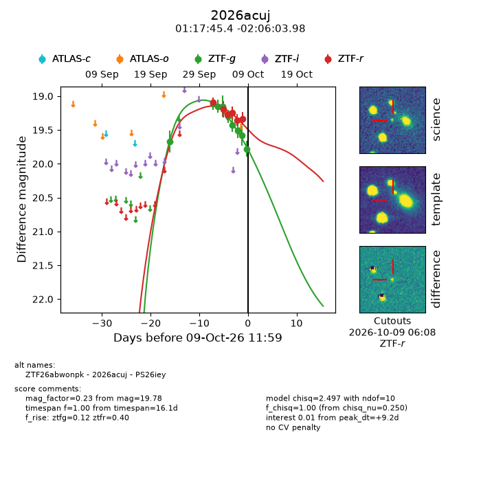
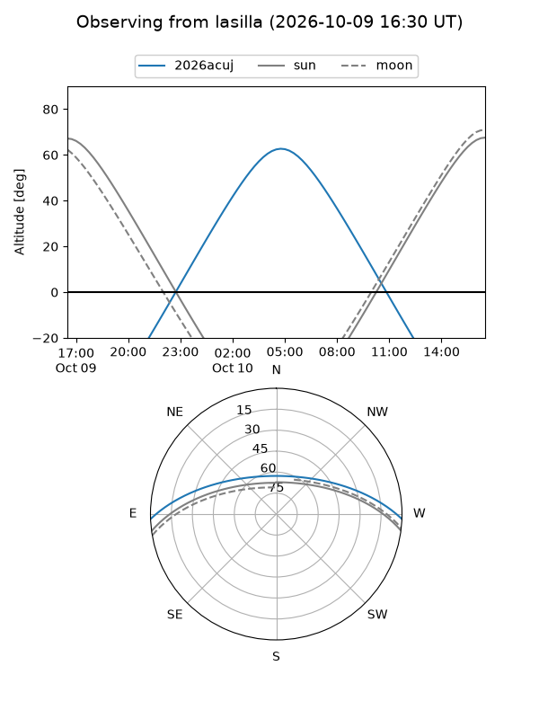
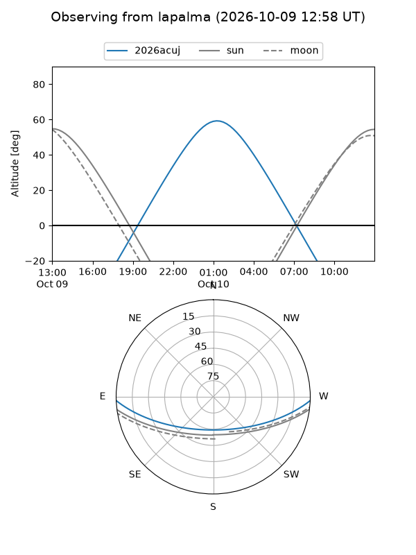
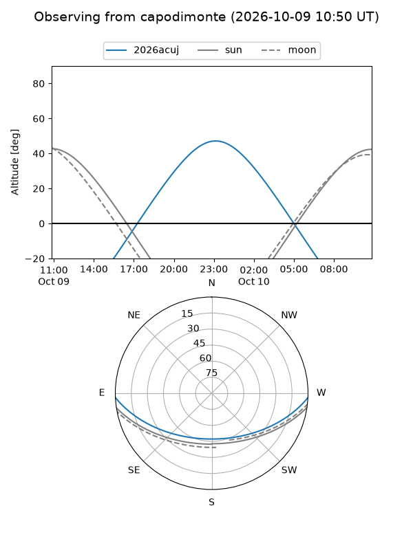
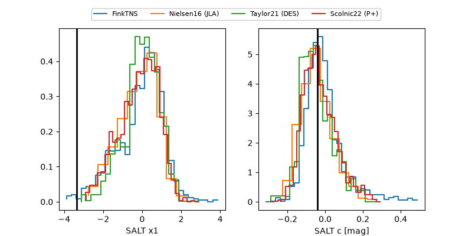

2026acuj
Target 2026acuj at 2026-10-09 12:01
Aliases and brokers:
FINK-ZTF: ztf.fink-portal.org/ZTF26abwonpk
Lasair-ZTF: lasair-ztf.lsst.ac.uk/objects/ZTF26abwonpk
ALeRCE-ZTF: alerce.online/object/ZTF26abwonpk
YSE-PZ: ziggy.ucolick.org/yse/transient_detail/2026acuj
TNS name: wis-tns.org/object/2026acuj
Direct TNS query: direct search
alt names
ZTF26abwonpk (ztf,fink_ztf)
2026acuj (tns,yse)
PS26iey (panstarrs)
Coordinates:
equatorial (ra, dec) = 19.4394,-2.10110
equatorial (HMS+DMS) = 01:17:45.44,-02:06:03.98
galactic (l, b) = (138.1811,-64.19083)
Flags:
peak dt: +9.2
Photometry:
last ztfg=19.78, ztfr=19.33
9 ztfg, 6 ztfr detections
Lightcurve

Visibility



Additional plots
